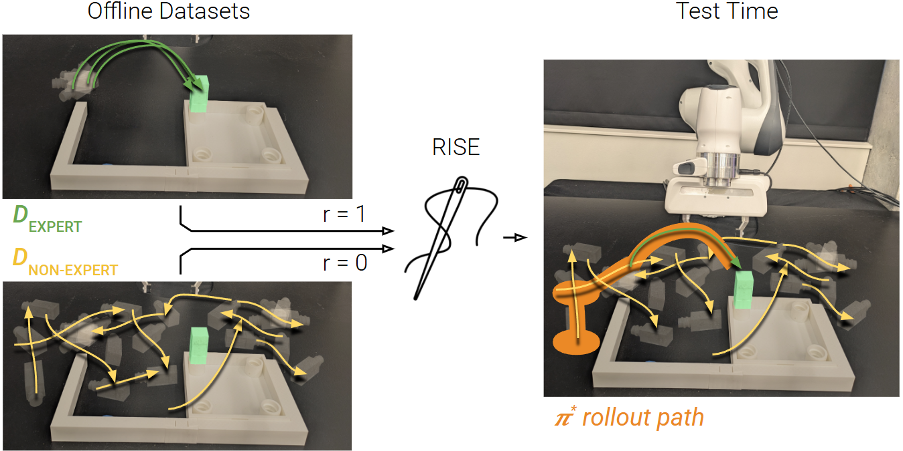

Publications

Using Non-Expert Data to Robustify Imitation Learning via Offline Reinforcement Learning
In Review, ICRA 2025
Kevin Huang*, Rosario Scalise*, Cleah Winston, et al. [show all]

Medical Question-Generation for Pre-Consultation with LLM In-Context Learning
GenAI4Health, NeurIPS 2024 Poster
Caleb Winston, Cleah Winston, et al. [show all]

Multimodal Clinical Prediction with Unified Prompts and Pretrained Large-Language Models
IEEE International Conference on Healthcare Informatics, 2024
Caleb Winston, Chloe Winston, Cailin Winston, et al. [show all]

Repairing Brain-Computer Interfaces with Fault-Based Data Acquisition
IEEE International Conference on Software Engineering, 2022
Cailin Winston, Caleb Winston, Chloe N Winston, et al. [show all]
Precisely Detecting and Resolving BCI Errors With Case Functions
IEEE Engineering in Medicine & Biology Society, 2021
Chloe N Winston, Cailin Winston, Caleb Winston, et al. [show all]